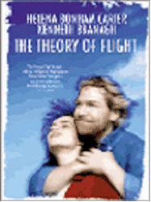

Contents | Features | Reviews | Books | Archives | Store |
 |
|
| Movie Credits | Buy It! |
The Theory of Flight
Review by Elias Savada
Posted 25 December 1998
|  | Directed by Paul Greengrass. Starring
Helena Bonham Carter, Kenneth Branagh, Written by Richard Hawkins. |
The cinematic equivalent to experimental light aircraft, The Theory of Flight is a bumpy ride that sputters and fails, not quite crashing yet never soaring above its earnest intentions. Yet another metaphor for the Beauty-and-the-Beast tale, this one sports Academy-Award nominees Kenneth Branagh (Henry V) and Helena Bonham Carter (Wings of the Dove) as participants in a love story where the protagonists appear missing in action. As to which is the beauty and which the beast, it’s a toss-up.
Richard (Branagh) portrays a troubled artist, emotionally void, unstable in romance, and on the outs with Julie (Holly Aird) his latest squeeze, a banker in London. His fixation with flight and a failed hang glide off a high rise land him in legal difficulties. A magistrate’s sentence of 120 days of community service follows Richard to a small Welsh community to which he has fled. In an out-of-the-way rented farmhouse with too much spare time, he shrinks inward, fleeing Western civilization and his g.f, whiling away hours creating a makeshift biplane (built from spit, an erector set, some leftover Martha Stewart craft items, and, of course, Airplanes for Dummies). His screen time is also split with his new court assignment Jane (Bonham-Carter), a paraplegic with vibrant inner energy but devoid of the physical ability to exert it. Their relationship is a challenge to themselves and the viewers. As drawn by budding scenarist Richard Hawkins, the character Richard (Hmmm, notice how both have the same first name.) shows no development through most of the film, instead pushing him from one lame-brained idea to the next. Jane, confined to a wheelchair and her speech constrained and slurred as she fights a losing battle with amyotrophic lateral scelorsis (ALS), the motor-neuron disorder commonly known as Lou Gehrig’s disease, has her sights set on one goal -- getting shagged (as the British quaintly put it).
Seems her affliction hit before a youthful deflowering and the virgin enlists Richard to assist. The nebbish (albeit not in the Woody Allen sense/character that Branagh nailed with aplomb in Celebrity) refuses the job out of angst, but the daring duo head to the big city to find a way for the deed to be done (topless clubs for the physically challenged, employment agencies, etc.). The pair, now thick as thieves after a series of playful sequences, eventually secure the services of a professional gigolo (Ray Stevenson), while Richard makes a brashly stupid decision to rob his ex-girlfriend’s bank for the necessary funds.
Bonham Carter is the most rewarding nugget in this morose story of a doomed relationship; her candid frustration and brash energy radiates behind the physical limitations of the role. She’s as bold and rebellious as any teenager, bedecked in baseball cap and bright race-car driver jacket. Be it shoplifting from a local grocery or surfing porno websites, she desperately wants to leave her personal mark on the world she will soon leave behind. Meanwhile, Branagh’s bland identity is trapped within a fully functioning skeleton. It’s like watching an animated stick figure, which is not to say it’s all Branagh’s fault entirely, but the limitations of the script. The couple’s mismatched affinity isn’t sufficiently developed, and director Paul Greengrass can’t make the actors (romantically attached in real life after they co-starred five years ago in Mary Shelley’s Frankenstein) jumpstart off the written page. He pushes the project to the edge of pathos, with dashes of misplaced slapstick, including a horribly silly speeded-up sequence in a London hotel room on the eve of Jane’s date with destiny (well, Jane specifically wanted Richard Gere for her erotic daytrip, but he wasn’t available). Such bone-headed directorial blunders make this a less than inspirational attempt at dealing with a legitimate subject.
As the "other," smaller film dealing with death up close this holiday season (Stepmom being the larger, wider release, and one I haven’t seen yet), The Theory of Flight makes a misguided effort to explore two awkward individuals in search of expression and fulfillment. All the sincerity the film aches to offers is lost in the end, with all the offbeat parts never adding up to more than the whole.
Contents | Features | Reviews | Books | Archives | Store
Copyright © 1999 by Nitrate Productions, Inc. All Rights Reserved.